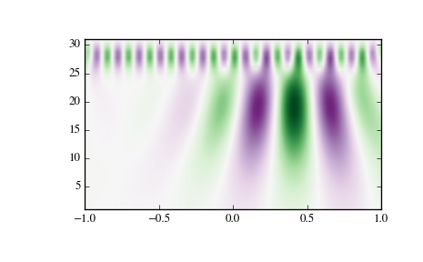

scipy.signal.cwt¶
- scipy.signal.cwt(data, wavelet, widths)[source]¶
Continuous wavelet transform.
Performs a continuous wavelet transform on data, using the wavelet function. A CWT performs a convolution with data using the wavelet function, which is characterized by a width parameter and length parameter.
Parameters: data : (N,) ndarray
data on which to perform the transform.
wavelet : function
Wavelet function, which should take 2 arguments. The first argument is the number of points that the returned vector will have (len(wavelet(width,length)) == length). The second is a width parameter, defining the size of the wavelet (e.g. standard deviation of a gaussian). See ricker, which satisfies these requirements.
widths : (M,) sequence
Widths to use for transform.
Returns: cwt: (M, N) ndarray
Will have shape of (len(widths), len(data)).
Notes
>>> length = min(10 * width[ii], len(data)) >>> cwt[ii,:] = scipy.signal.convolve(data, wavelet(length, ... width[ii]), mode='same')
Examples
>>> from scipy import signal >>> import matplotlib.pyplot as plt >>> t = np.linspace(-1, 1, 200, endpoint=False) >>> sig = np.cos(2 * np.pi * 7 * t) + signal.gausspulse(t - 0.4, fc=2) >>> widths = np.arange(1, 31) >>> cwtmatr = signal.cwt(sig, signal.ricker, widths) >>> plt.imshow(cwtmatr, extent=[-1, 1, 1, 31], cmap='PRGn', aspect='auto', ... vmax=abs(cwtmatr).max(), vmin=-abs(cwtmatr).max()) >>> plt.show()
